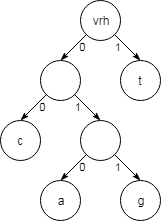

Licenca
To delo je na voljo pod pogoji slovenske licence Creative Commons 2.5:
priznanje avtorstva - nekomercialno - deljenje pod enakimi pogoji.
Celotna licenca je na voljo na spletu na naslovu http://creativecommons.org/licenses/by-nc-sa/2.5/si/. V skladu s to licenco je dovoljeno vsakemu uporabniku delo razmnoževati, distribuirati, javno priobčevati, dajati v najem in tudi predelovati, vendar samo v nekomercialne namene in ob pogoju, da navede avtorja oziroma avtorje in izdajatelja tega dela. Če uporabnik delo predela, kar pomeni, da ga spremeni, preoblikuje, prevede ali uporabi to delo v svojem delu, lahko predelavo dela ponudi na voljo le pod pogoji, ki so enaki pogojem iz te licence oziroma pod enako licenco.

Huffmanovo kodiranje
Prvih 13 znakov DNK zaporedja iz prejšnje strani lahko zapišemo s 26 biti – presledkov med kodami posameznih znakov ne potrebujemo.
00100111111111010011110111
Vendar lahko besedilo stisnemo še bolj. V kratkem vzorcu besedila je črka t bolj pogosta, kot druge črke (t se pojavi 7-krat, c trikrat, a dvakrat in g samo enkrat). Če črki t priredimo krajšo kodo, bomo 54% časa (7 od 13 znakov) uporabljali manj prostora. Uporabimo lahko naslednje kode:
a: 010 c: 00 g: 011 t: 1
V tem primeru lahko prvih 13 znakov DNK zaporedja iz prejšnje strani zapišemo samo z 22 biti.
0100110011110001011001
Novo kodo se da še vedno odkodirati, čeprav se dolžini razlikujeta. Pomembno je, da pri odkodiranju začnemo pri prvem bitu na levi strani ter sledimo ujemanju kod od leve proti desni.
Vaja
Poskusi odkodirati zaporedje bitov 111001 s kodo, ki smo jo pravkar uporabljali.
Ali je ta koda najboljša možna, za kodiranje danih znakov? Izkaže se, da je ta koda optimalna za dani primer. Kako se lahko prepričamo, da je kodo mogoče odkodirati?
Davidu Huffmanu je uspelo, ker se je domislil algoritma za izračun optimalnih vzorcev bitov, ki temelji na pogostosti vsakega znaka. Njegov algoritem je precej enostavno mogoče izvesti ročno in je običajno izražen v obliki gradnje strukture, ki jo imenujemo »drevo«.

Če želimo z uporabo te strukture nekaj odkodirati (na primer kodo 0100110011110001011001), začnemo pri vrhu in izbiramo veje glede na vsak naslednji bit (od leve proti desni). Prvi bit je 0, zato sledimo levi veji; naslednji bit je 1, sledimo desni veji; naslednji bit je 0, ki nas po levi veji pripelje do črke a. Ko pridemo do lista, ki vsebuje črko, zopet nadaljujemo z vrha drevesa. Naslednjih nekaj bitov je 011..., ki nas pripeljejo do črke g in tako naprej. Drevo nam omogoča zelo lahko odkodiranje katere koli kode, saj nikoli ne pride do zmede, kateri veji slediti in posledično, katero črko odkodirati.
Oblika drevesa je odvisna od tega, kako pogosti so posamezni simboli. V zgornjem primeru je črka t zelo pogosta, zato je blizu vrha, medtem ko sta črki a in g tri veje vzdolž drevesa (vsakemu bitu ustreza ena veja).